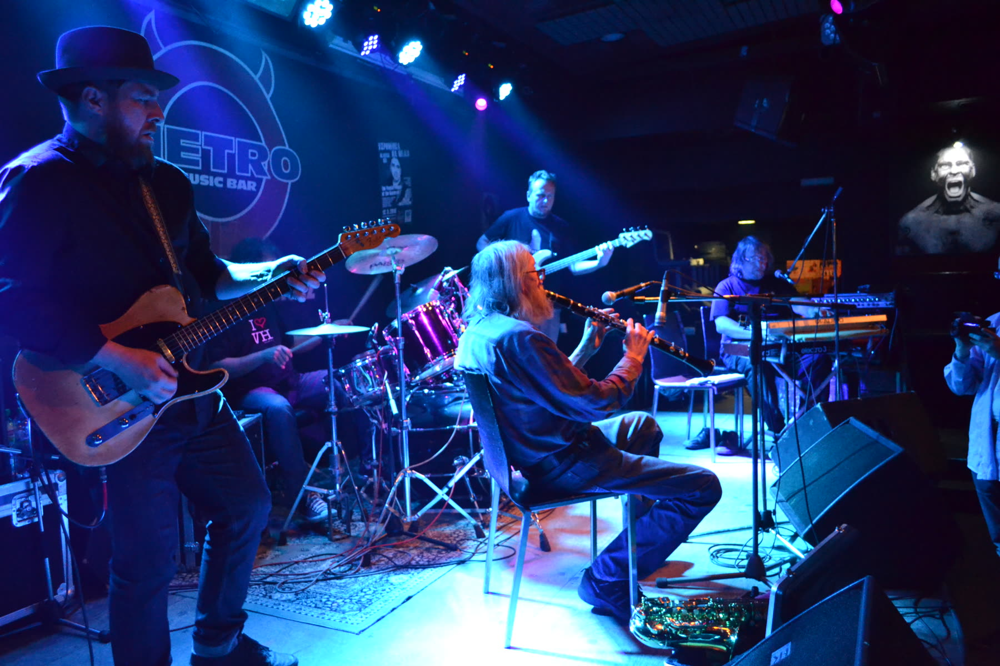
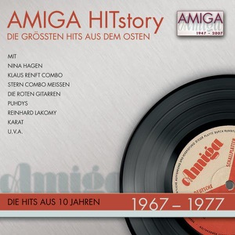
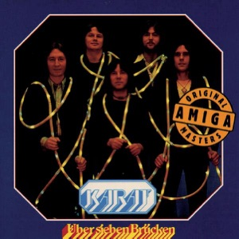
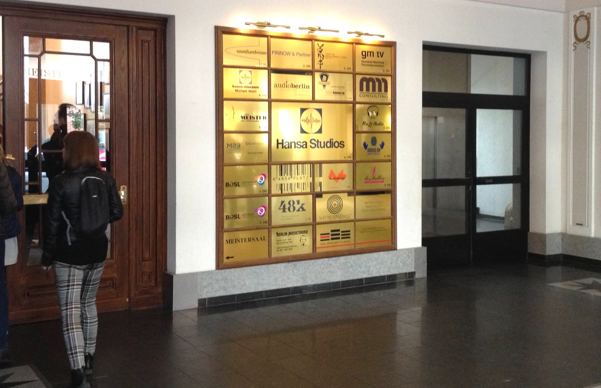

Een band die niet mocht bestaan
In augustus 1968 rolden tanks van de Sovjet-Unie en haar bondgenoten Praag binnen. Het korte voorjaar van vrijheid in Tsjecho-Slowakije was voorbij. Minder dan een maand later richtte de zeventienjarige bassist Milan Hlavsa een band op. Hij noemde die naar een nummer van Frank Zappa: The Plastic People of the Universe. Hun grote voorbeeld was The Velvet Underground uit New York.
In 1970 nam de regering de band de vergunning af. Wie geen vergunning had, mocht niet als muzikant optreden en had officieel geen beroep. The Plastic People speelden toch, op plekken buiten het zicht van de overheid, voor een publiek dat van mond tot mond hoorde waar ze speelden. Hun teksten kwamen van Egon Bondy, een dichter wiens werk ook verboden was.

Foto: Jiripichl · CC BY-SA 4.0In 1976 speelden ze op een festival van wat de undergroundscene de tweede cultuur noemde. Kort daarna werden de muzikanten opgepakt. De rechter veroordeelde hen tot acht tot achttien maanden cel, voor het georganiseerd verstoren van de openbare orde. Dat proces was een van de redenen waarom de toneelschrijver Václav Havel en anderen in januari 1977 schreven, een verklaring over mensenrechten. Dertien jaar later was Havel president.

Magické noci, van het album dat de band in 1974 opnam en dat pas jaren later in Frankrijk uitkwam. Hoor hoe rauw en traag het klinkt: dit is geen muziek om te dansen, maar om te luisteren naar wat er niet gezegd mocht worden.
Een liedjesmaker te veel
Ook in de DDR, het communistische Oost-Duitsland, hield de staat de muziek in de gaten. De zanger Wolf Biermann mocht al jaren niet meer optreden in zijn eigen land. In november 1976 kreeg hij toestemming voor een tournee door West-Duitsland. Terwijl hij daar was, nam de DDR hem zijn staatsburgerschap af. Hij mocht niet meer terug.
Bekende schrijvers en acteurs in de DDR, onder wie de schrijfster Christa Wolf, protesteerden. Een jaar later vertrok ook Nina Hagen naar het Westen, samen met haar moeder, de actrice Eva-Maria Hagen, die met Biermann samenleefde. In de DDR was Nina Hagen al een ster, met een vrolijk liedje over een vriendje dat op vakantie de kleurenfilm voor zijn camera vergat. In het Westen werd ze een van de gezichten van de Duitse punk.

Biermann schreef het lied voor een bevriende dichter die net als hij werd tegengewerkt: laat je niet verharden, zingt hij, in deze harde tijd.

Een hit uit 1974, op het staatslabel Amiga. Een vrolijke schlager, maar wie wil, hoort er een knipoog in naar een land waar kleur schaars was.
Bruggen over de grens
Soms sprong een liedje gewoon over de Muur. In april 1978 zond de Oost-Duitse televisie een film uit met een nieuw nummer van de band Karat: Über sieben Brücken musst du gehn. Nog dezelfde dag belden kijkers uit Oost én West naar de zender om te vragen waar ze de plaat konden kopen. In 1980 nam de West-Duitse zanger Peter Maffay het nummer op. Het kwam op nummer vier in de hitparade.
Karat zelf mocht in die jaren niet op de West-Duitse televisie verschijnen. Pas na 1990 zongen Maffay en Karat het nummer samen.

Over zeven bruggen moet je gaan, zeven donkere jaren doorstaan. Zeven keer zul je de as zijn, maar één keer ook het heldere licht. Een liefdeslied, maar in een verdeeld land klonk het als veel meer.
Helden bij de Muur
In de zomer van 1977 nam David Bowie in West-Berlijn een album op in de Hansa-studio, een paar honderd meter van de Muur. Vanuit het raam zag hij twee geliefden die elkaar kusten bij de Muur. Het waren zijn producer Tony Visconti en een zangeres, Antonia Maass. Bowie maakte er een lied van over twee mensen die maar één dag helden kunnen zijn: Heroes.

Foto: Lear 21 · CC BY-SA 4.0Tien jaar later, op 6 juni 1987, stond Bowie op een podium bij de in West-Berlijn, vlak bij de Muur. Hij noemde het later een van de meest emotionele optredens die hij ooit gaf. Toen hij in januari 2016 overleed, bedankte het Duitse ministerie van Buitenlandse Zaken hem: hij had geholpen de Muur neer te halen.

Het lied begint ingetogen en wordt steeds luider, tot Bowie bijna schreeuwt. Luister naar de gitaar van Robert Fripp: één lange, gierende toon die nooit lijkt op te houden.
Springsteen in Oost-Berlijn
 Foto: Uhlemann, Thomas · CC BY-SA 3.0 de
Foto: Uhlemann, Thomas · CC BY-SA 3.0 deOp 19 juli 1988 kwam Bruce Springsteen naar Oost-Berlijn. Op een terrein bij de wielerbaan in Weißensee stonden volgens schattingen meer dan driehonderdduizend mensen, een van de grootste concerten in de geschiedenis van de DDR. Halverwege las Springsteen een korte tekst voor in het Duits. Hij was gekomen om rock-'n-roll te spelen, zei hij, in de hoop dat ooit alle grenzen zouden verdwijnen. Daarna speelde hij Chimes of Freedom van Bob Dylan, een lied over de klokken van de vrijheid.
Ik ben hier om rock-'n-roll voor jullie te spelen, in de hoop dat op een dag alle grenzen verdwijnen.Bruce Springsteen, Oost-Berlijn, 1988
Iets meer dan een jaar later, in november 1989, viel de Muur.

Opgenomen tijdens dezelfde tournee, in juli 1988 in Stockholm. Hoor hoe de band het lied van Dylan groot en plechtig maakt, als een hymne.
Wij willen verandering
In de Sovjet-Unie zelf mocht rock lang alleen op een paar plekken klinken. Een daarvan was de Rockclub van Leningrad, het huidige Sint-Petersburg. In het najaar van 1981 werd de band Kino van zanger Viktor Tsoi er lid. In de zomer van 1986 zong Tsoi voor het eerst een nieuw nummer: Хочу перемен (Khochu peremen). De titel betekent: ik wil verandering.
Het was de tijd van , de hervormingen van partijleider Michail Gorbatsjov. Het lied werd het geluid van die jaren, al zei Tsoi zelf dat het geen protestlied was. In de film Assa uit 1987 speelde Kino zichzelf. Op 15 augustus 1990 kwam Tsoi om bij een auto-ongeluk in Letland. In Moskou staat nog altijd een muur vol teksten en tekeningen voor hem, en zijn lied klonk dertig jaar later opnieuw, bij de protesten in Wit-Rusland.

Een strak, bijna mechanisch ritme en een stem zonder versiering. Tsoi zingt dat onze harten om verandering vragen, onze ogen om verandering vragen. Meer hoefde hij niet te zeggen.